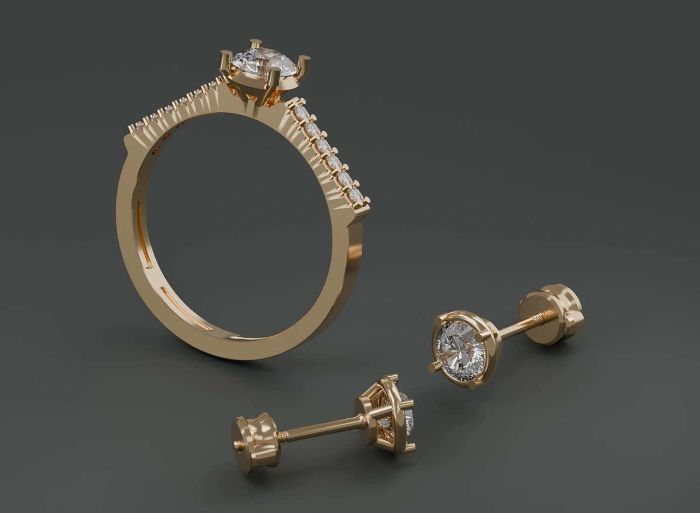
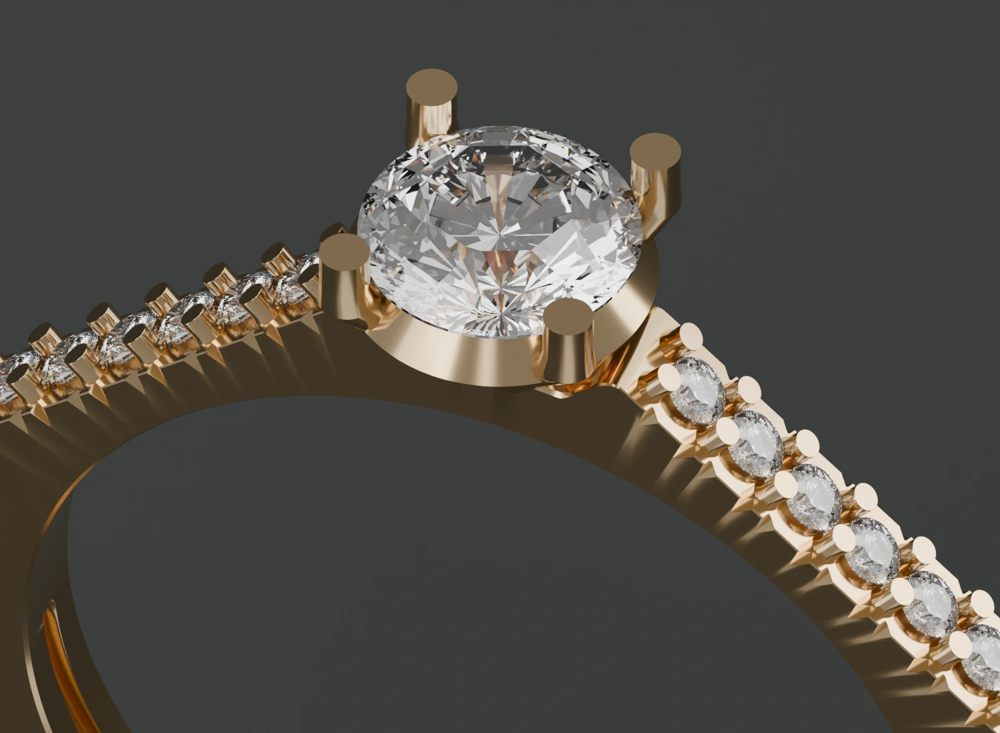
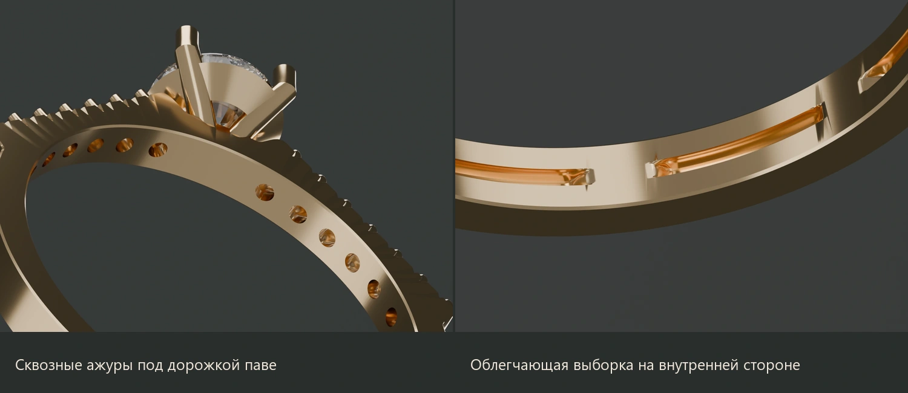
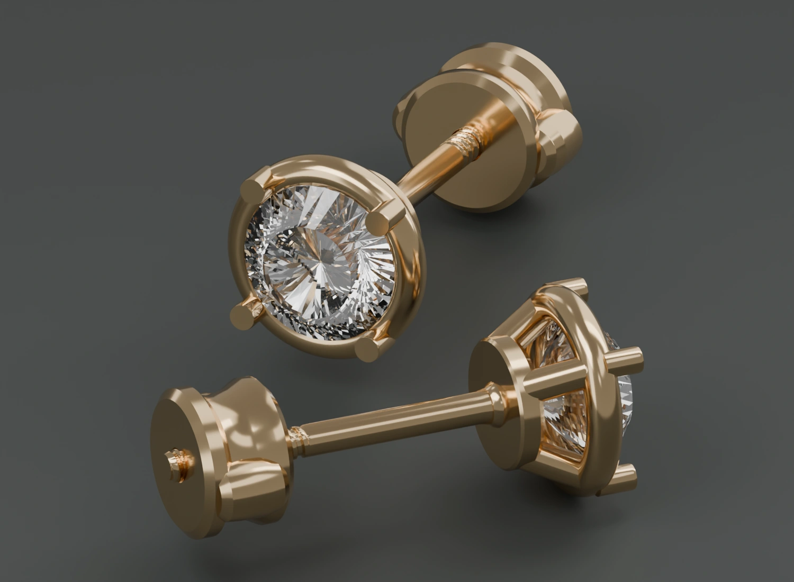
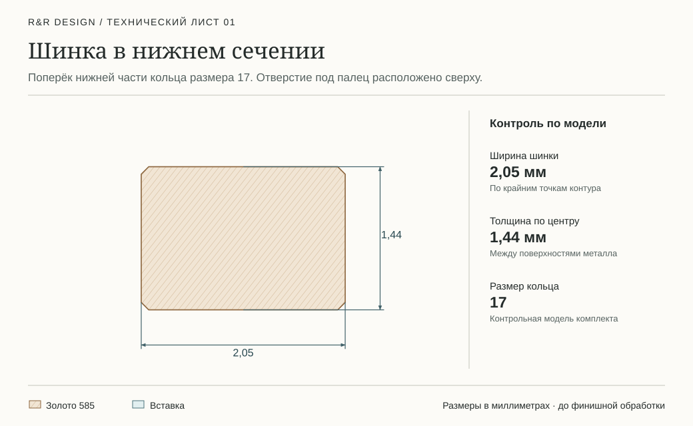
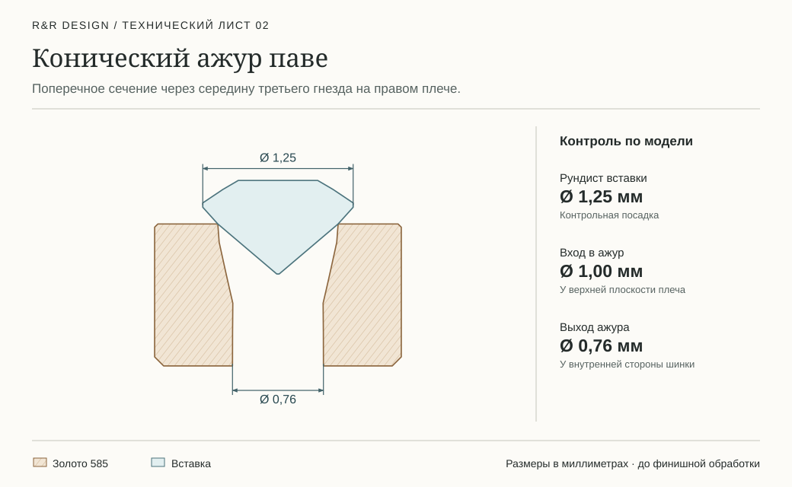
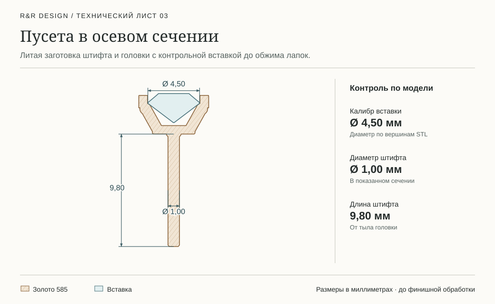

R&R Design · Заказ-наряд № 1
Солитер
и пусеты на винте
Круглый бриллиант над двумя дорожками микропаве. В комплекте — пара низких открытых корзинок с винтовыми барашками.
Au 585 · размеры 16 / 17 / 18 · масштаб 1:1

Технический паспорт
Файлы и масса заготовок
В набор для одного изделия выбирают один размер кольца и по две копии корпуса пусеты и барашка. Все STL заданы в миллиметрах. Усадка в файлах — 0%. Коэффициент для конкретной смолы, сплава и литейного процесса устанавливает мастерская.
| Деталь | Объём, мм³ | Au 585, г | Au 750, г | Pt 950, г | Ag 925, г | Файлы |
|---|---|---|---|---|---|---|
| Кольцо 16,0 | 180,64 | 2,375 | 2,809 | 3,721 | 1,871 | STL · Карта 3D |
| Кольцо 17,0 | 189,10 | 2,487 | 2,940 | 3,895 | 1,959 | STL · Карта 3D |
| Кольцо 18,0 | 197,58 | 2,598 | 3,072 | 4,070 | 2,047 | STL · Карта 3D |
| Пусета со штифтом | 32,65 | 0,429 | 0,508 | 0,673 | 0,338 | STL · Карта 3D |
| Барашек | 33,71 | 0,443 | 0,524 | 0,694 | 0,349 | STL · Карта 3D |
| Пара пусет до обработки | 132,71 | 1,745 | 2,064 | 2,734 | 1,375 | 2 корпуса + 2 барашка |
| Пара после нарезки | 127,44 | 1,676 | 1,982 | 2,625 | 1,320 | По модели обработки |
| Комплект, размер 17 | 321,81 | 4,232 | 5,004 | 6,629 | 3,334 | До обработки |
Масса металла до закрепки, без камней, литников и подач. Расчётные плотности в г/см³ совпадают с инспектором: Au 585 — 13,15; Au 750 — 15,55; Pt 950 — 20,60; Ag 925 — 10,36. Масса заготовки гайки и штифта меняется при нарезке резьбы.
Карта вставок
| Позиция | Шт. | Огранка | Ø × высота, мм | Опора или гнездо, мм | ct / шт. | ct / позицию |
|---|---|---|---|---|---|---|
| Центр кольца | 1 | Круглая | 5,00 × 3,050 | Ø 4,403–4,412 на Z 12,105 (кольцо 17) | 0,4707 | 0,4707 |
| Паве, 6 + 6 | 12 | Круглая | 1,25 × 0,778 | Конический ажур: верх Ø 1,000; выход Ø 0,756 | 0,0076 | 0,0916 |
| Пусеты | 2 | Круглая | 4,50 × 2,530 | Ø 4,291 на Z 2,598 от мочки | 0,3164 | 0,6328 |
Суммарно на один комплект — 15 камней, около 1,195 ct.
Каратность ориентировочная, по объёму цифрового камня. Для бриллианта принят коэффициент 0,0176 ct/мм³. Фактический вес зависит от пропорций огранки. Свойства алмаза, GIA.
Во всех трёх размерах пересчитано тело шинки. Камни и их посадки заданы в миллиметрах. На каждом плоском плече расположены шесть параллельных посадок с межцентровым шагом 1,450 мм. Просвет между соседними рундистами составляет 0,200 мм.
От каждой посадки до боковых V-подрезов остаётся от 0,482 мм. Верхняя перемычка между соседними ажурами — от 0,450 мм, перемычка по изнанке — от 0,698 мм. Верхний боковой бортик — от 0,498 мм. Это рабочая зона микропаве. У каждого из 12 камней выполнены четыре боковых V-подреза, всего 48 на кольцо.
У верхнего входа в сечении на 0,0002 мм ниже кромки замерен Ø 0,99997 мм. На выходе, в сечении на 0,03 мм от изнанки, — Ø 0,756 мм. Нижний участок ориентирован по нормали к поверхности пальца. Каждый из 28 открытых корнеров проверен в 12 направлениях: Ø 0,520 мм.
Четыре открытых центральных крапана Ø 0,900 мм выступают над верхом рундиста на 0,755 мм. В контрольных сечениях галереи по нормали получено от 0,870 мм. Корнеры дорожки оставлены до обжима. Внутренние выборки открыты со стороны пальца и плавно выходят на поверхность шинки.
| Ø по заказу | Ø прохода, мм | Толщина низа, мм | Ширина низа, мм | Дно выборки, мин. | Боковина выборки, мин. |
|---|---|---|---|---|---|
| 16,0 | 16,000 | 1,440 | 2,050 | 0,860 | 0,790 |
| 17,0 | 17,000 | 1,440 | 2,050 | 0,860 | 0,790 |
| 18,0 | 18,000 | 1,440 | 2,050 | 0,860 | 0,790 |
Закрепка и изнанка






Контрольные сечения
Размеры приведены в миллиметрах. Каждый чертёж можно открыть в полном размере.






Винтовое соединение
Высота каста до края металла 3,370 мм, до площадки установленного камня — 3,530 мм от плоскости мочки. Гладкий литой штифт Ø 1,00 мм длиной 9,80 мм оставлен с припуском 0,05 мм на сторону. В барашке выполнено сквозное пилотное отверстие Ø 0,60 мм.
После литья обработать штифт до Ø 0,90 мм и нарезать правую мелкую резьбу с шагом 0,35 мм. Нестандартный усечённый профиль 60°, наружный диаметр по впадинам 0,740 мм. У гайки малый диаметр 0,780 мм, большой 0,940 мм. Входная фаска и заходы видны на эталонах обработанной пары в архиве.
Средние диаметры наружной и внутренней резьбы — 0,820 и 0,860 мм. Номинальный диаметральный зазор 0,040 мм. Профиль и инструмент согласовать под парную деталь. В 121 цифровом положении за 10 оборотов при подаче 3,50 мм объём пересечения равен нулю. Отдельный поворот на 180° без подачи даёт пересечение 0,1623 мм³.
Контроль исходных STL
У пяти STL по одной замкнутой металлической оболочке. Открытых рёбер, неманифолдных рёбер, самопересечений и красных граней штатного инспектора Au 585 — ноль. Жёлто-оранжевые отметки сохранены в полной карте.
Усиленная наклонная ножка центрального каста имеет минимум 0,754 мм по контрольным сечениям. По 18 384 замера на размер охватывают все четыре ноги. Вне габаритов двух плеч паве на всех трёх картах нет измеренных хорд короче 0,70 мм. Для заготовок пусеты и барашка кратчайшие встречные замеры составляют 0,740 и 0,837 мм.
Проверены все 39 траекторий вставки в размерном ряду и траектория камня пусеты. При вводе не обнаружено объёмного пересечения с оправой и соседними камнями. Ход винтовой пары проверен по обработанным поверхностям. Усилие затяжки, поведение сплава при обжиме и технологический выход определяют на пробной отливке.
Для Au 585 инспектор окрашивает измеренную хорду короче 0,45 мм в красный цвет, от 0,45 до 0,60 мм — в жёлто-оранжевый. Серым показаны грани без встречного замера. Хорды на фасках и толщины в размерном сечении приведены отдельно. Критерий для несущих сечений — от 0,70 мм.
| Деталь | Грани | Открытые / неманиф. / несогл. | <0,45 | 0,45–0,60 | Без замера | Мин. хорда, мм | Данные |
|---|---|---|---|---|---|---|---|
| Кольцо 16,0 | 76324 | 0 / 0 / 0 | 0 | 18273 | 2315 | 0,4624 | Лучи CSV |
| Кольцо 17,0 | 75198 | 0 / 0 / 0 | 0 | 18326 | 2233 | 0,4624 | Лучи CSV |
| Кольцо 18,0 | 75504 | 0 / 0 / 0 | 0 | 18336 | 2353 | 0,4625 | Лучи CSV |
| Пусета со штифтом | 51666 | 0 / 0 / 0 | 0 | 0 | 734 | 0,7400 | Лучи CSV |
| Барашек | 47482 | 0 / 0 / 0 | 0 | 0 | 1855 | 0,8366 | Лучи CSV |
В архиве для каждой измеренной грани указаны номер треугольника, координаты центра в системе исходного STL и длина хорды. Для повторной проверки откройте ссылку в таблице массы. Машиночитаемый протокол.
Хронометраж
| Этап | Начало, МСК | Окончание, МСК | Прошло |
|---|---|---|---|
| Базовое кольцо и пусеты, включая исправления | 18:50:29 | 19:11:36 | 21 мин 7 с |
| Два дополнительных размера, от первого запуска до второго результата | 19:11:36 | 19:11:40 | 0 мин 4 с |
| Контроль STL, посадок, замка и повторная проверка в /check/ | 18:54:30 | 19:17:05 | 22 мин 35 с |
| Студийная сцена, рендеры и обновление после V-подрезки | 18:52:56 | 19:19:29 | 26 мин 32 с |
| Публикация на домене и первая публичная сверка | 19:20:43 | 19:24:18 | 3 мин 34 с |
Старт заказа по сообщению заказчика — 18:48 МСК. Первый инструментальный замер начат в 18:49:36. Интервалы показывают фактическое календарное время. Моделирование, проверка, выпуск изображений и сборка страницы шли параллельно. Окончательные запуски генератора с экспортом и проверкой посадок для 16 и 18 мм заняли по журналу 2 и 2 с соответственно. Разработка параметров и предыдущие итерации вошли в этап моделирования.
От заданного старта до первой сверки всего комплекта по публичному адресу прошло 36 мин 18 с. Последующее внесение этой отметки в паспорт учитывается отдельно.